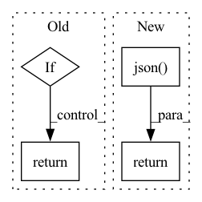

Pattern ID :26222
Before Change
f"sending POST request to mini-jinad on {self.host}/{self._kind}"
)
r = requests.post(url=f"{self.host}/{self._kind}", json=self.params)
if r.status_code != requests.codes.created:
raise Runtime400Exception(
f"{self._kind.title()} creation failed: {r.json()}"
)
return r.json()
except requests.exceptions.RequestException as ex:
self._logger.error(f"{ex!r}")
raise Runtime400Exception(After Change
async with aiohttp.request(
method="POST", url=f"{uri}/{self._kind}", json=params
) as response:
response_json = await response.json()
if response.status != HTTPStatus.CREATED:
raise Runtime400Exception(
f"{self._kind.title()} creation failed: {response_json}"
)
return response_json
async def _update(self, uri, **kwargs):
// TODOIn pattern: SUPERPATTERN
Frequency: 4
Non-data size: 4
Instances Fragment ID: 78940788
Project Name: jina-ai/jina
Commit Name: 5082c49ebcf70b070f96682b7e1766c17822253b
Time: 2021-07-15
Author: deepankar.mahapatro@jina.ai
File Name: daemon/stores/peas.py
M Class Name: PeaStore
N Class Name: PeaStore
M Method Name: _add(3)
N Method Name: _add(1)
M Parent Class: ContainerStore
N Parent Class: ContainerStore
M File Name: daemon/stores/peas.py
N File Name: daemon/stores/peas.py
M Start Line: 12
M End Line: 29
N Start Line: 17
N End Line: 37
Before Change
params={"port_expose": port_expose},
json=self.params,
)
if r.status_code != requests.codes.created:
raise Runtime400Exception(
f"{self._kind.title()} creation failed \n{"".join(r.json()["body"])}"
)
return r.json()
except requests.exceptions.RequestException as ex:
self._logger.error(f"{ex!r}")
raise Runtime400Exception(After Change
params={"port_expose": str(port_expose)},
json=params,
) as response:
response_json = await response.json()
if response.status != HTTPStatus.CREATED:
raise Runtime400Exception(
f"{self._kind.title()} creation failed: {response_json}"
)
return response_json
@raise_if_not_alive
async def _update(self, uri: str, params: Dict, **kwargs) -> Dict: Fragment ID: 78940789
Project Name: jina-ai/jina
Commit Name: 5082c49ebcf70b070f96682b7e1766c17822253b
Time: 2021-07-15
Author: deepankar.mahapatro@jina.ai
File Name: daemon/stores/flows.py
M Class Name: FlowStore
N Class Name: FlowStore
M Method Name: _add(4)
N Method Name: _add(2)
M Parent Class: ContainerStore
N Parent Class: ContainerStore
M File Name: daemon/stores/flows.py
N File Name: daemon/stores/flows.py
M Start Line: 24
M End Line: 41
N Start Line: 17
N End Line: 40
Before Change
output = model.generate(input_ids=encoded_input, num_return_sequences=1)
if is_list:
return [tokenizer.decode(tokens, skip_special_tokens=True) for tokens in output]
else:
return tokenizer.decode(output[0], skip_special_tokens=True)
else:
raise ValueError("Non-local inference is not currently implemented")
After Change
body = {**body, **kwargs}
res = requests.post("https://api.kiri.ai/generation", json=body,
headers={"x-api-key": api_key}).json()
return res["output"]
Fragment ID: 78940784
Project Name: backprop-ai/backprop
Commit Name: 300da0a21087ca27863518a5c2056c2d4b5791cd
Time: 2021-01-20
Author: ojasaarkristo@gmail.com
File Name: kiri/models/generation.py
M Class Name: AnonimousClass
N Class Name: AnonimousClass
M Method Name: generate(6)
N Method Name: generate(5)
M Parent Class:
N Parent Class:
M File Name: kiri/models/generation.py
N File Name: kiri/models/generation.py
M Start Line: 10
M End Line: 51
N Start Line: 78
N End Line: 133